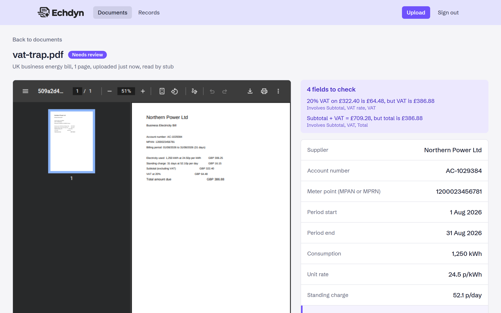
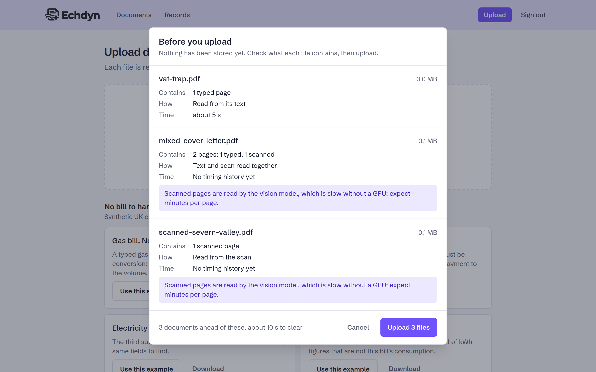
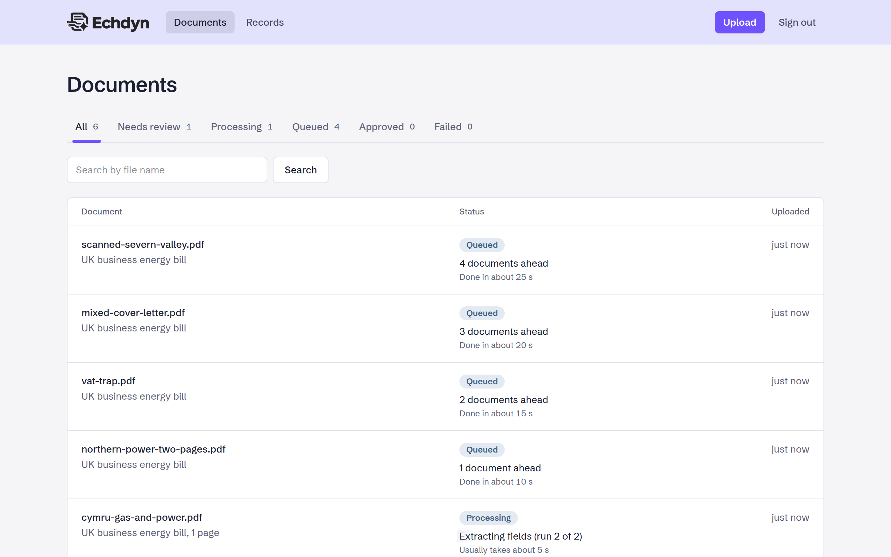
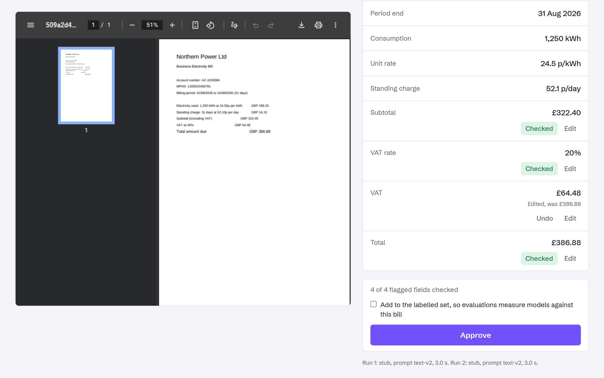
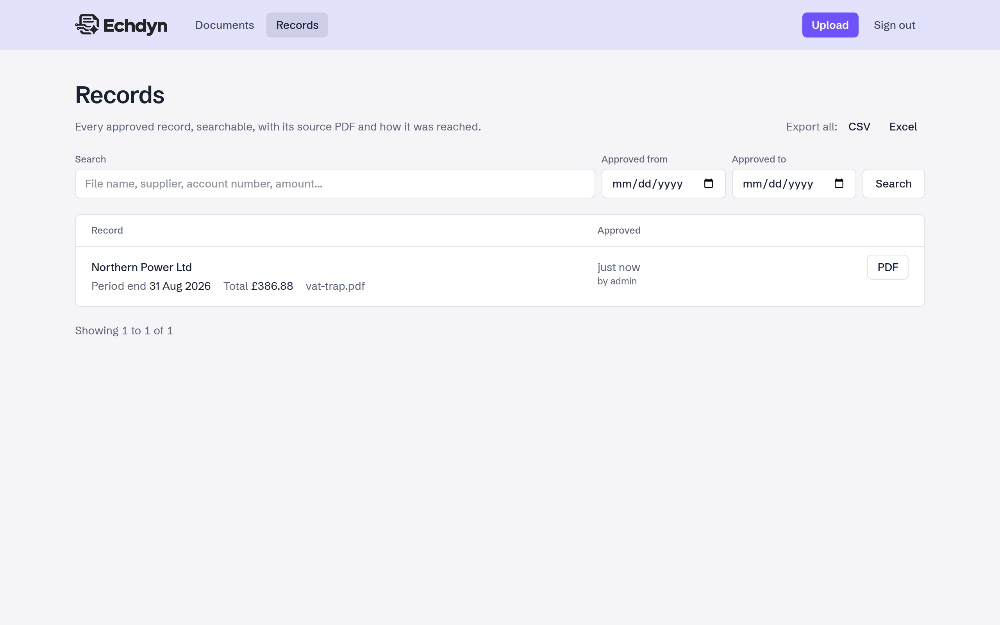
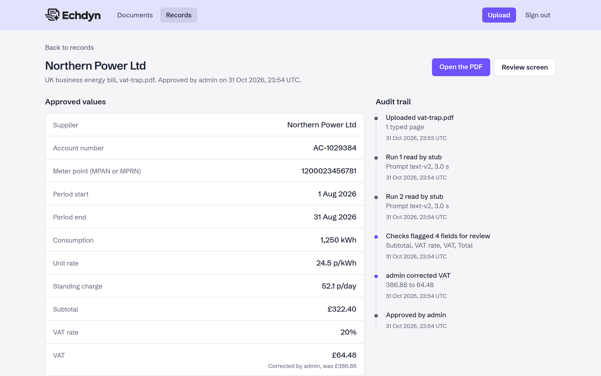

Self-hosted document extraction with local LLMs
echdyn turns PDFs and scanned paperwork into validated, structured data. A local model reads each document, business rules check what it read, a person reviews anything uncertain, and approved records go out by API, webhook or export. Nothing leaves your machine.

Built to be trusted, not just to be clever
Businesses still pay people to retype supplier PDFs into spreadsheets, and many will never send contracts or quality data to a cloud API. echdyn is built around one question: when can you trust what a small local model read?
Local by default
Ollama, Postgres, Redis and storage start with one command. Point it at a GPU machine on your network when you have one.
Checked by arithmetic
The demo document is a UK energy bill because its figures add up. A model can misread VAT, but it cannot make the total balance.
A person decides
Clean documents can be approved automatically. Anything flagged waits for a reviewer, with the PDF beside the fields and the reason for each flag.
Every value traceable
Each approved value links back to its source PDF, the model run that read it and any correction a reviewer made.
How a document moves through
Each upload runs as queued background jobs, so the app stays responsive while a model works through the pile.
- Ingest Stored, hashed to catch duplicates, queued.
- Pre-process Each page sorted into text or scan; scans rendered to images.
- Extract A text or vision model fills the schema, constrained to its JSON shape.
- Validate Zod checks the shape, business rules check the sums and dates.
- Score Read twice; anything that failed or changed between runs is flagged.
- Review Approved automatically or by a person, then sent out by webhook.
See it working
These screens are captured automatically by a Playwright script against a fresh stack, using the example bills that ship with the repo.
Know before you upload
Drop in PDFs and echdyn inspects them first: page count, typed or scanned pages, which model will read them, how long it should take and whether you have sent it before. Nothing is stored until you proceed.

Progress you can read
Local models are not instant, so the list says what is happening: the stage each document is in, its place in the queue and an estimate from recent runs, rather than a bare spinner.

Fix only what needs fixing
Flagged fields are highlighted with the rule they broke. Correct a value and approve; the correction is recorded against the run that got it wrong.

Searchable records
Approved data is searchable in the app, filterable by any field in the API (every bill over 30p per kWh, say) and exportable as CSV or Excel.

The whole story of a record
Upload, each model run, what the checks flagged, who corrected what and who approved it. The source PDF is one click away.

Measured, not claimed
An eval harness runs the real pipeline over labelled bills and reports how often the model was right, how often it asked for help and, most importantly, how often it was wrong without anyone noticing.
| Set | Read by | Field accuracy | Fully correct | Flagged | Median time |
|---|---|---|---|---|---|
| 30 text bills | llama3.2 (3B) |
96.7% | 66.7% | 33.3% | 32.5 s |
| 5 scanned bills | qwen2.5vl (3B) |
93.3% | 40.0% | 80.0% | 334.8 s |
A baseline from a laptop. These runs used a CPU only, with 8 GB of RAM and 4 cores available, so only 3B models would fit and every token was generated on the CPU. The eval will be rerun on a home server with a GPU and larger models, and the results added for comparison.
Even so, every mistake the small models made was caught and sent to review. Prompts were improved through the eval: asking the model to copy values exactly as printed and parsing them in code took text accuracy from 84.2% to 96.7%.
Under the hood
TypeScript throughout, in a pnpm workspace: a Next.js app for the UI and API, a Node worker for the pipeline, and a shared core both of them use.
- TypeScript
- Node 24
- Next.js 16
- Ollama
- BullMQ and Redis
- Postgres and JSONB
- Drizzle ORM
- S3-compatible storage
- Zod 4
- pdfjs
- Vitest
- Playwright
- Docker Compose
Run it yourself
You need Docker. Everything else, the model included, runs in containers. Then upload
one of the example bills in examples/, each of which tests a different
trap.
# clone and configure
git clone https://github.com/phoenix1331/echdyn.git
cd echdyn
cp .env.example .env
# start the stack, set up the database, pull the models
make up
make migrate
make seed
make models
# then open http://localhost:8000